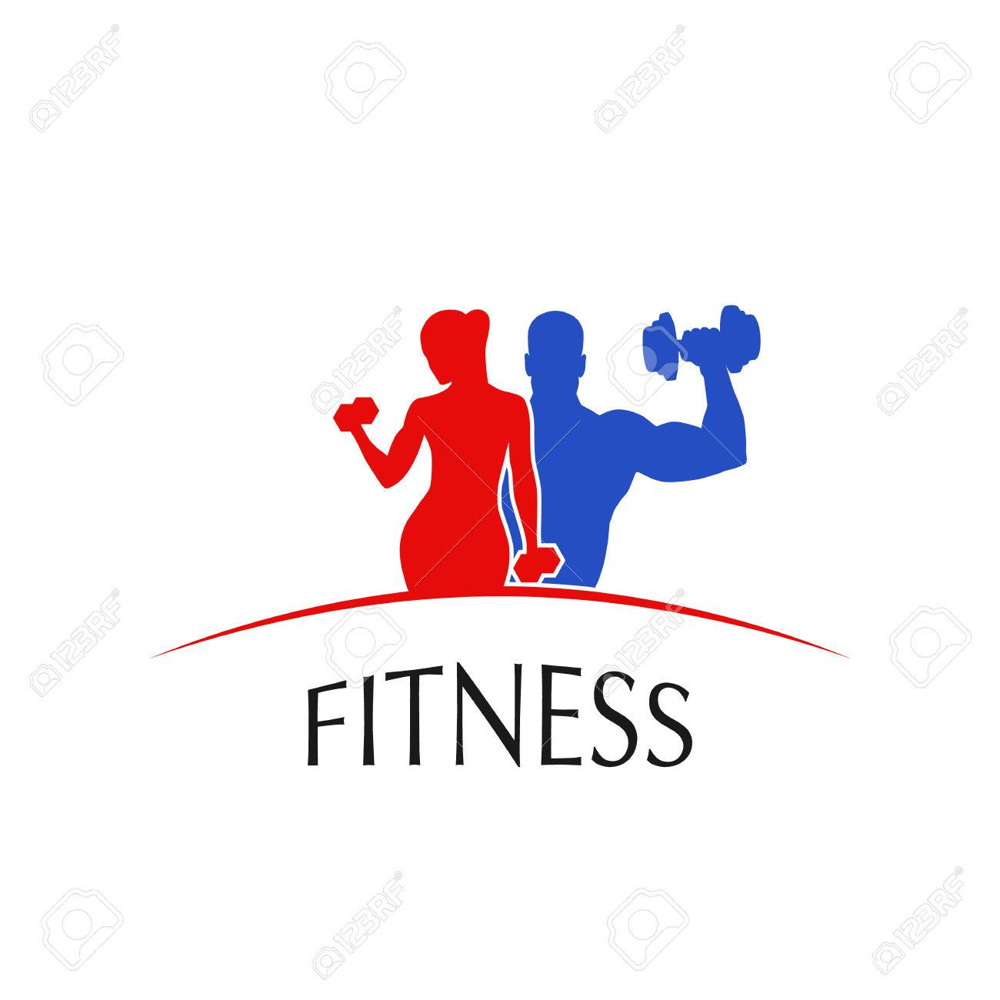
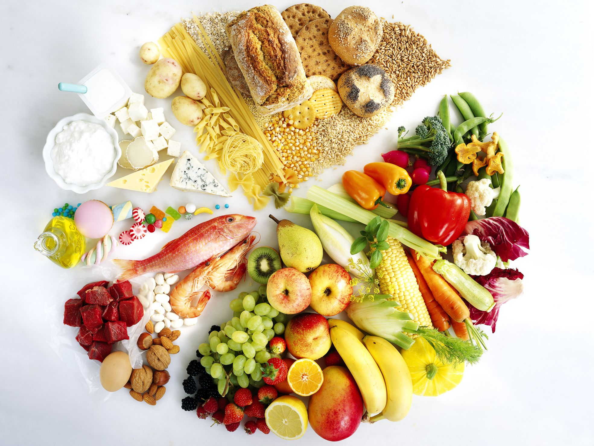
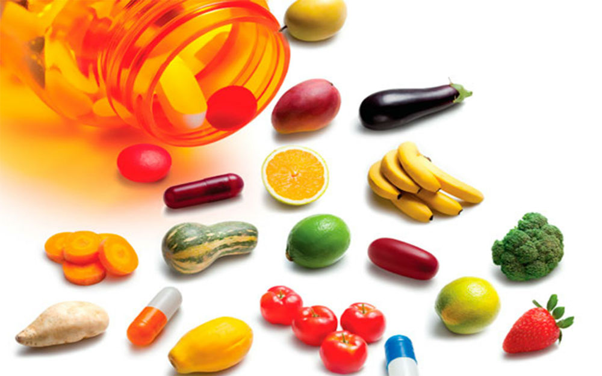

full fit life

suplementacion
nutricion
una mejor salud
Mantener un estilo de vida saludable reducira tus posibilidades
de contraer una enfermedad coronaria y cardiovascular y nivelara
tus niveles de azucar y colesterol en la sangre. Ademas, disminuye
la aparicion de enfermedades cronicaas y degenerativas como el sida,
cáncer, alzheimer, etc
TODOS NECESITAMOS ALIMENTO.
Los alimentos son lo único que nos proporciona energía y diversos
nutrientes para crecer sanos y fuertes. Ninguna persona logra sobrevivir
sin alimento.No se trata de comer por comer, con el único fin de sacar el
hambre, sino de obtener por medio de los alimentos, los nutrientes necesarios
para poder realizar todas nuestras funciones, según la actividad física
que se desarrolle, el sexo, la edad, y el estado de salud.
La comida que consumimos a lo largo del día debe estar formada por
cuatro comidas principales y (una o dos colaciones), dependiendo de
cada caso en particular incluyendo los distintos grupos de alimentos.
alimentacion

La alimentación saludable es aquella que aporta
a cada individuo todos los alimentos necesarios para cubrir
sus necesidades nutricionales, en las diferentes etapas de
la vida (infancia, adolescencia, edad adulta y envejecimiento)
, y en situación de salud.

suplementacion
Los suplementos alimenticios o dietéticos, como
indica su nombre, son productos creados para complementar
la alimentación o la dieta, y entre sus ingredientes contienen
minerales, vitaminas, enzimas, ácidos grasos y aminoácidos.
 ejercicios
ejercicios
los ejercicios te pueden traer muchos
beneficios desde mejorar tu salud a volverte mas atletico, tambien es
una de las mejores formas de lidiar con el estres de la vida diaria.